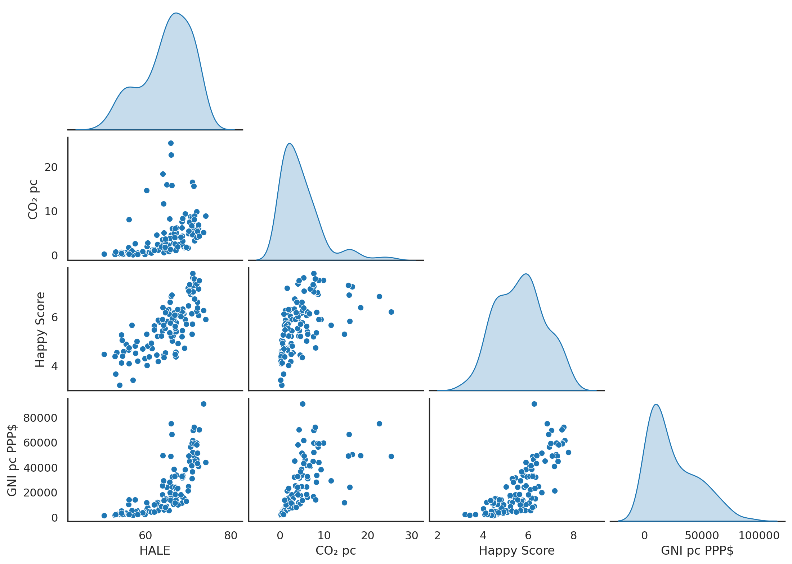

Normality
Normality the normal distrubition and other totally normal stuff.

Multiple Regression
Follow up of 'scatter plot to regression line'. An intuitive guide to multiple regression.

A few things about p.
What I know about the p-vlalue and p-hacking